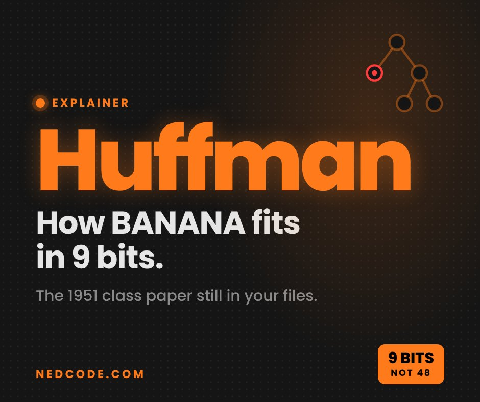

Tech · Explainer
What Is Huffman Coding? How BANANA Shrinks From 48 Bits to 9

The word BANANA normally takes 48 bits to store. With Huffman coding it takes 9, and nothing is lost. It’s a trick from a 1951 class assignment, and it’s still squeezing files on your phone today.
What is Huffman coding?
A computer usually spends the same 8 bits on every letter. BANANA has 6 letters, so that’s 48 bits. Huffman coding gives common letters short codes and rare ones longer codes, so the whole word gets smaller.
Storing the word BANANA
In bits. Shorter is smaller.
How Huffman coding works, step by step
You count how often each letter shows up, then keep joining the two rarest into a branch until everything hangs off one tree. Left turns become 0, right turns become 1.
Building the code for BANANA
- 1Count each letter: A 3 times, N twice, B once
- 2Join the two rarest, B and N, into one branch
- 3Join that branch with A to finish the tree
- 4Label every left turn 0 and every right turn 1
- 5Read each letter’s path: A is 0, B is 10, N is 11
| Letter | In BANANA | Code | Bits used |
|---|---|---|---|
| A | 3 times | 0 | 3 |
| N | 2 times | 11 | 4 |
| B | once | 10 | 2 |
Why the computer never mixes the letters up
No code is the start of another one. Reading 10 0 11 0 11 0 from the left, “1” alone means nothing yet, “10” can only be B, then “0” is A, and so on. There are no spaces needed, and the original word comes back perfectly.
The class paper behind Huffman coding
In 1951, MIT professor Robert Fano gave his class a choice: take the final exam, or write a term paper on finding the most efficient binary code. Graduate student David Huffman took the paper, and his answer became Huffman coding, a 1991 Scientific American profile recounts. He published it in 1952.
“Huffman code is one of the fundamental ideas that people in computer science and data communications are using all the time.”
Where Huffman coding is used today
It’s one half of DEFLATE, a format that compresses data with “a combination of the LZ77 algorithm and Huffman coding,” per its official spec. Every PNG image uses DEFLATE, the W3C PNG standard says. When Huffman died in 1999, UC Santa Cruz noted his codes were in fax machines, modems, computer networks and high-definition TV.
My take
A reel showed me BANANA turning into 9 bits and I had to look it up. Kind of wild that a homework assignment from 1951 is still shrinking the PNGs on my site.
Also a nice reminder that the best ideas are sometimes just counting things first.
FAQ
What is Huffman coding in simple words?
It’s a way to store text in fewer bits. Letters that show up a lot get short codes and rare letters get longer ones, and nothing is lost when you decode it.
How does BANANA go from 48 bits to 9?
Normally each of its 6 letters takes 8 bits, so 48. Huffman coding gives A (3 times) the code 0, N (twice) 11 and B (once) 10. That adds up to 3 + 4 + 2 = 9 bits.
Who invented Huffman coding?
David Huffman, as a graduate student at MIT. He came up with it for a term paper in Robert Fano’s class in 1951 and published it in 1952.
Is Huffman coding still used today?
Yes. It’s part of DEFLATE, the compression inside PNG images, and UC Santa Cruz noted it was used in fax machines, modems, computer networks and HDTV.
Sources